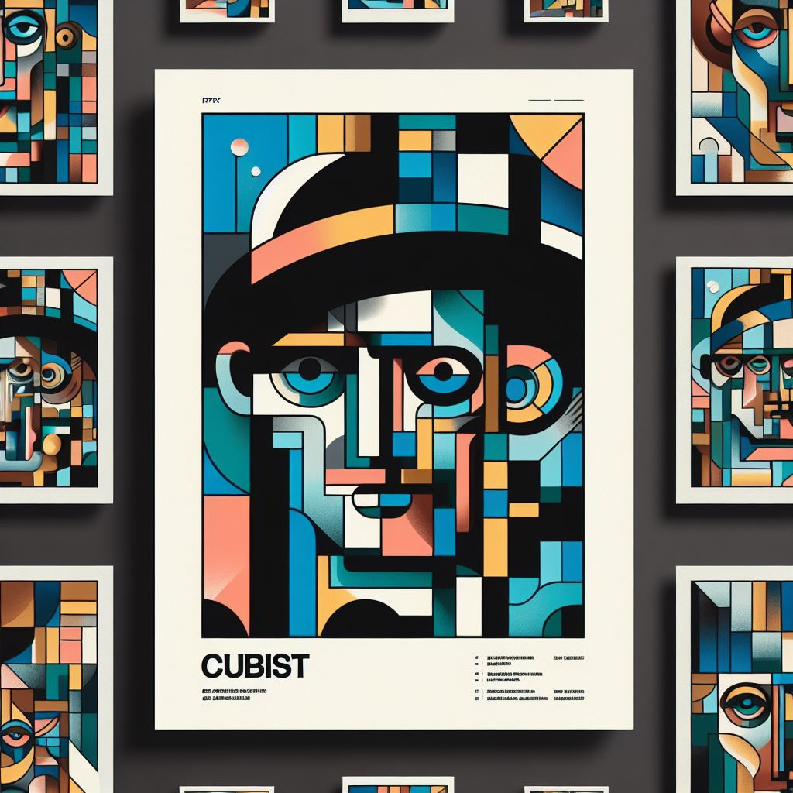
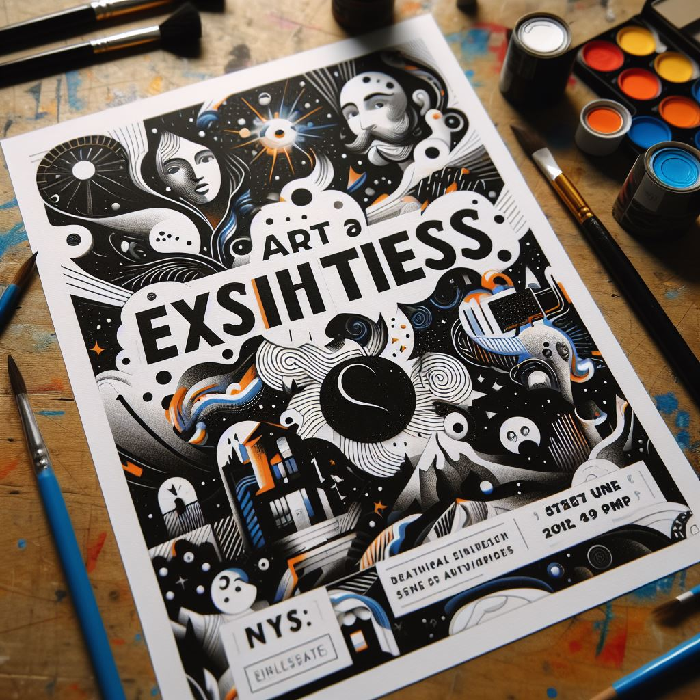

Historia
El Atelier de las Artes Visuales fue fundado en 1985 en el corazón de Río Colorado, Argentina, por un grupo de artistas apasionados que soñaban con crear un espacio donde la creatividad y la innovación pudieran florecer. Desde sus humildes comienzos en un pequeño estudio, la escuela ha crecido hasta convertirse en un centro de aprendizaje de renombre internacional, atrayendo a estudiantes de todo el mundo que buscan explorar y perfeccionar sus habilidades artísticas. A lo largo de los años, el Atelier ha mantenido su compromiso con la excelencia en la enseñanza de las artes visuales, ofreciendo una variedad de cursos que abarcan desde la pintura y la escultura hasta la fotografía y el diseño gráfico. Los profesores del Atelier, todos ellos artistas consumados en sus respectivos campos, se dedican a nutrir el talento individual de cada estudiante, fomentando un ambiente de aprendizaje que valora la experimentación y la expresión personal. A pesar de los cambios y desafíos que han surgido a lo largo de los años, el Atelier de las Artes Visuales sigue siendo un faro de inspiración y creatividad en la comunidad artística, un testimonio del poder transformador del arte y un recordatorio de la importancia de perseguir nuestros sueños con pasión y determinación. A medida que la escuela se embarca en su próxima etapa de crecimiento y evolución, sigue siendo fiel a su misión original: inspirar a los artistas del mañana a alcanzar su máximo potencial y a hacer su propia contribución única al mundo del arte.

Eventos
Exposiciones Actuales
En la emocionante Semana de las Artes, nuestra escuela celebra la creatividad y el talento de todos nuestros estudiantes. Este evento anual transforma nuestras aulas en cautivadoras galerías, mostrando una amplia variedad de obras, desde las creaciones más experimentales hasta las piezas más refinadas. Este año, nos complace especialmente destacar el trabajo de nuestros talentosos alumnos que se están graduando. La exposición no solo es una celebración de sus logros académicos, sino también una oportunidad para que compartan sus visiones artísticas únicas y su evolución a lo largo de su tiempo en la escuela. Desde pinturas vibrantes hasta instalaciones innovadoras, cada obra cuenta una historia única y refleja el compromiso y la pasión de nuestros estudiantes por las artes visuales. Te invitamos a unirte a nosotros en esta experiencia visual, explorando las diversas expresiones creativas que nuestros estudiantes han dado vida durante su tiempo en nuestra querida escuela de artes visuales.


Próximas exposiciones
Rompiendo Barreras: Una Exposición Cubista Parte 1 y 2
Sumérgete en dos exposiciones dedicadas al fascinante mundo del cubismo, explorando las reinterpretaciones visuales y las formas geométricas únicas de nuestros artistas.

Ecos del Caos: Abstracción en Arte
Descubre el poder de la abstracción mientras nuestros estudiantes desafían los límites convencionales, liberando la expresión artística de las restricciones figurativas.

Imágenes del Mañana: Arte que Desafía el Tiempo
Adéntrate en el futurismo y experimenta la velocidad y energía del mundo moderno a través de las obras visionarias de nuestros talentosos alumnos.
